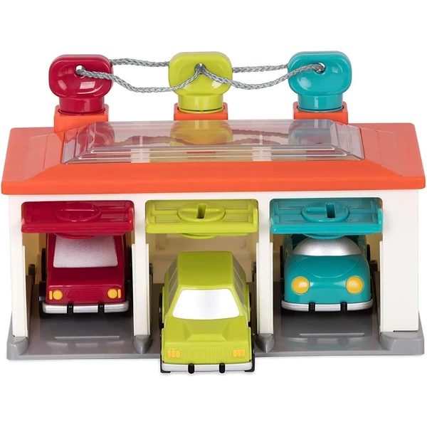
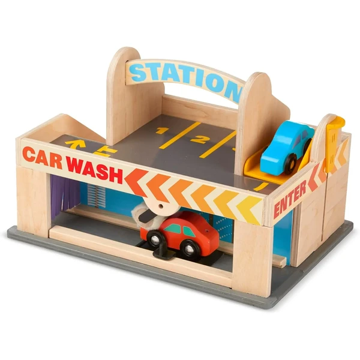
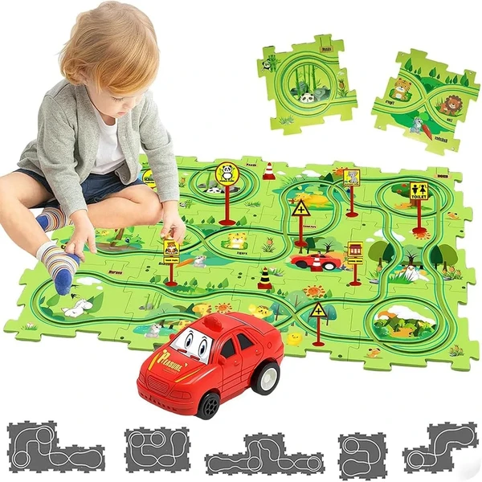
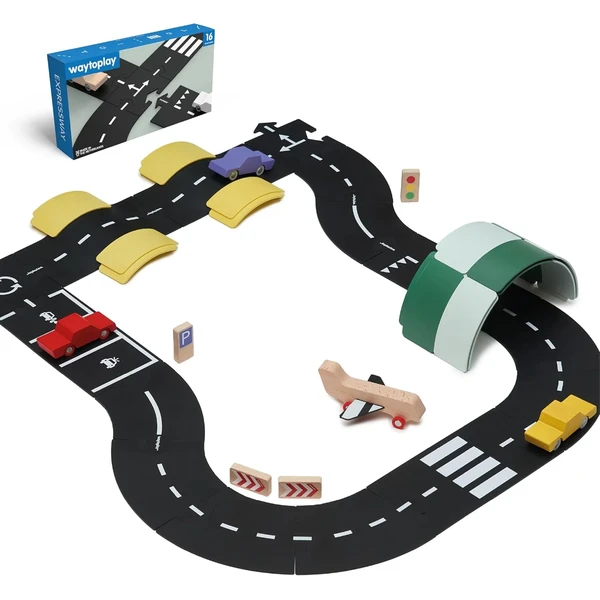
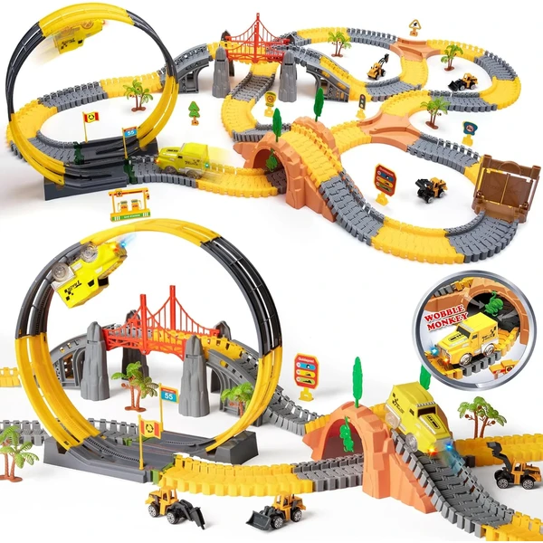

Los coches de juguete son uno de los regalos más queridos a los 3 años. En esta etapa el niño ya no se limita a empujarlos: inventa historias, monta aparcamientos e imita el tráfico, así que los coches se convierten en una herramienta perfecta para el juego simbólico. Packs de coches pequeños, vehículos de madera, camiones o coches de personajes comparten que son un juguete abierto, resistente y fácil de guardar. En esta selección encontrarás coches pensados para niños de 3 años, para jugar solos o en compañía.
¿Qué desarrollan los coches de juguete?
Aunque parezcan sencillos, ponen en marcha la imaginación y varias habilidades clave de esta etapa.
- Juego simbólico
- Imaginación
- Coordinación
- Orientación espacial
- Creatividad
- Lenguaje

Circuito de coches con botones hahaland
Una pista con seis botones de colores para guiar tres mini coches (policía, ambulancia, bomberos) a través de ocho retos, sin necesidad de pilas.
⭐ ¿Por qué nos gusta?
- ✔ Seis botones de colores para guiar los coches.
- ✔ Incluye tres mini coches temáticos.
- ✔ No necesita pilas, mecanismo inercial.
💬 Lo que más destacan las familias
Muchos padres coinciden en que engancha desde el primer momento gracias a los botones de colores, que los niños aprenden a usar solos casi enseguida. También se agradece que no dependa de pilas, así que siempre está listo para jugar.
Ver en Amazon

Battat Garaje para 3 Coches
Un garaje con techo transparente y tres coches a juego con el color de cada puerta, con llaves para emparejar y abrir, y botones que ponen en marcha los coches solos.
⭐ ¿Por qué nos gusta?
- ✔ Emparejar colores y formas con las llaves.
- ✔ Botones causa-efecto: los coches arrancan solos.
- ✔ Formato compacto, tres coches incluidos.
💬 Lo que más destacan las familias
Los compradores valoran especialmente que combine el juego de emparejar colores con la sorpresa de ver arrancar los coches solos al pulsar el botón. Es de los que mejor funcionan como primer garaje, porque no exige demasiada destreza todavía.
Ver en Amazon

Melissa & Doug Parking con Estación de Servicio
Un parking de madera de dos plantas con túnel de lavado, surtidor de gasolina, montacargas funcional y dos coches incluidos, con un asa en la parte superior para transportarlo con facilidad.
⭐ ¿Por qué nos gusta?
- ✔ Montacargas funcional entre las dos plantas.
- ✔ Túnel de lavado y surtidor de gasolina incluidos.
- ✔ Asa integrada para llevarlo de un lado a otro.
💬 Lo que más destacan las familias
Entre los comentarios más habituales aparece lo resistente que resulta la madera frente a otros garajes de plástico, y lo mucho que gusta el montacargas en marcha. El asa para transportarlo también se menciona como un acierto para llevarlo de una habitación a otra.
Ver en Amazon

Pista de coche DIY modular
Un set de raíles modulares que se pueden combinar libremente para crear distintos trazados, con un coche que se desliza suavemente por la vía montada.
⭐ ¿Por qué nos gusta?
- ✔ Raíles modulares, trazados distintos cada vez.
- ✔ Esquinas redondeadas, material resistente a caídas.
- ✔ Fomenta la creatividad y el pensamiento lógico.
💬 Lo que más destacan las familias
No es raro encontrar comentarios sobre lo entretenido que resulta montar un trazado distinto cada vez, algo que mantiene el interés más tiempo que un circuito fijo. Los niños suelen pedir repetir el montaje una y otra vez antes incluso de ponerse a jugar con el coche.
Ver en Amazon

Waytoplay Expressway Carretera Flexible
Una carretera flexible de 258 cm con curvas, rectas, un cruce y una rotonda, que se puede montar sobre cualquier superficie de la casa o el jardín y ampliar con sets adicionales.
⭐ ¿Por qué nos gusta?
- ✔ Piezas flexibles, se adaptan a cualquier superficie.
- ✔ Incluye cruce y rotonda para trazados variados.
- ✔ Ampliable con más sets de la misma marca.
💬 Lo que más destacan las familias
Se repite bastante el comentario de que se adapta a cualquier rincón de la casa o del jardín, algo que da mucho juego cuando cambian de sitio para jugar. La rotonda y el cruce suelen ser las piezas favoritas a la hora de inventar recorridos.
Ver en Amazon

Circuito eléctrico 342 piezas OR TU
Un gran set de 342 piezas con dos coches eléctricos, bucles de 360°, puentes, señales de tráfico y pistas flexibles, pensado para montar circuitos elaborados y ambiciosos.
⭐ ¿Por qué nos gusta?
- ✔ 342 piezas, el circuito más grande de la lista.
- ✔ Dos coches eléctricos con bucle de 360°.
- ✔ Incluye señales de tráfico y vehículos de obra.
💬 Lo que más destacan las familias
Quienes lo han probado destacan que da para pasar tardes enteras montando trazados distintos, gracias a la cantidad de piezas. El bucle de 360° suele ser lo más celebrado cuando por fin consiguen que el coche lo complete.
Ver en Amazon